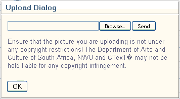

|
Uploading Images and Sounds
|
Previous Top Next |
Images and sounds can be attached to fields of the HTML hyperlink type. To insert an image or sound when creating or editing a record, click on the Hyperlink field. An upload dialog will then be displayed.

Use the dialog to Browse to the desired image or sound clip, select this and then click the Send button to upload the content to the server.
A progress bar that shows the status of the upload will be displayed. Once the upload has finished, the address of the resource will be shown in the field’s box.